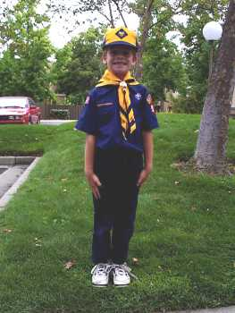
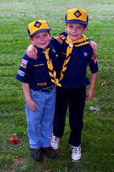
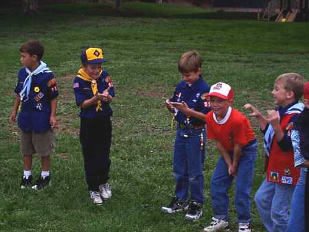
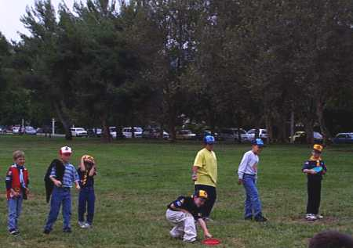

|
This fall Eric joined the Cub Scouts, which he loves so far. It looks like there's a good scouting community here in Pleasanton. Eric and Rick attended the season-opening Pack meeting at the end of September. |
|
 The proud new scout! |
|
 Eric and his neighbor and pack-mate Thomas. |
|
 One of the activities was an ice-brick version of hot-potato. The kids were very excited, and their hands quickly turned to ice themselves! That's Eric's friend Tim on Eric's left. |
|
 Eric ended with a session of "Ultimate Frisbee." (Eric is on the far right in this photo.) |